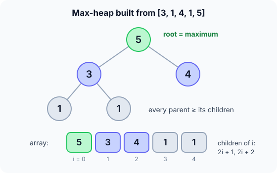

Prerequisites
- Binary trees: root, parent, children (see Trees).
- Storing a tree in an array: the children of index $i$ are $2i+1$ and $2i+2$.
- Selection sort, since heap sort is a faster version of it.
The analogy
Everyday analogy
Think of a knockout tournament: the champion sits at the top of the bracket. Retire the champion, and a quick mini-playoff along one path of the bracket finds the next champion.
Heap sort works the same way. The max-heap keeps the biggest number at the root. Retire it to the end of the array, re-run the playoff down one path, and the next biggest rises to the top.
How it works
Start by building the heap by hand
Take [3, 1, 4, 1, 5]. As a tree: 3 is the root, its children are 1 and 4, and the first 1 has children 1 and 5. Fix parents from the last one back to the root. Guess first, then open "Check".
Example: build-heap, predict before you read
Step 1. The last parent is index 1 (value 1), with children 1 and 5. Predict: does it swap, and with whom?
Check
Yes, with 5, the bigger child: [3, 5, 4, 1, 1].
Step 2. Cover the next line and guess: the root 3 now has children 5 and 4. What happens?
Check
3 swaps with 5, the bigger child: [5, 3, 4, 1, 1].
Step 3. The 3 sank to index 1, whose children are 1 and 1. Predict: does it keep sinking?
Check
No, 3 is bigger than both. The heap is built: [5, 3, 4, 1, 1].

Quick recall: Before reading further, cover the text above and say out loud: what does a max-heap guarantee?
Check your answer
Every parent is at least as big as its children, so the maximum is always at the root, index 0.
Finish the run
Now extract: swap the root with the last heap element, shrink the heap by one, and sift the new root down.
- Extract 1. Swap 5 to the end:
[1, 3, 4, 1 | 5]. Predict: where does the new root 1 sink to?Check
It swaps with 4, the bigger child:
[4, 3, 1, 1 | 5]. - Extracts 2 to 4. Keep going. Predict the final array.
Check
4 goes to the end, then 3, then 1:
[1, 1, 3, 4, 5]. Sorted.
Quick recall: Without scrolling up, say out loud: why does each extraction put a number in its final place?
Check your answer
The root is the largest number still in the heap, and it goes to the last slot of the heap, right before the numbers already extracted, which are all bigger.
The rule in plain words
Phase 1, build: for each parent from the last one back to the root, let it sink below any bigger child.
Phase 2, extract: swap the root (the max) with the last heap slot, shrink the heap, and sink the new root. Repeat until the heap has one element.
Quick recall: Before you read the code, write the three steps of one extraction in your own words. Then check below.
Check your answer
1. Swap the biggest number at the top with the last number in the heap. 2. Treat that last slot as done. 3. Let the new top sink, swapping with its bigger child, until it's bigger than both children.
The code
Read this code after you have built the heap by hand. It will make more sense.
void sift_down(int a[], int n, int i) { /* n = current heap size */
for (;;) {
int big = i, l = 2 * i + 1, r = 2 * i + 2;
if (l < n && a[l] > a[big]) big = l;
if (r < n && a[r] > a[big]) big = r;
if (big == i) return; /* bigger than both children */
int t = a[i]; a[i] = a[big]; a[big] = t;
i = big; /* keep sinking */
}
}void heap_sort(int a[], int n) {
for (int i = n / 2 - 1; i >= 0; i--) sift_down(a, n, i); /* build: O(n) */
for (int end = n - 1; end > 0; end--) {
int t = a[0]; a[0] = a[end]; a[end] = t; /* max to the end */
sift_down(a, end, 0); /* heap shrinks */
}
}Definition
What you just did, in one line: heap sort turns the array into a max-heap (every parent ≥ its children), then repeatedly swaps the root to the end of the shrinking heap and sifts the new root down.
flowchart TD
A["Build max-heap: sift down each parent, last to first"] --> B["Swap root (max) with last heap slot"]
B --> C["Shrink heap by one"]
C --> D["Sift new root down"]
D --> E{"Heap size > 1 ?"}
E -->|yes| B
E -->|no| F["Done: the array is sorted"]
[5, 3, 4, 1, 1], what is the array after the first trip round the loop? (Answer: [4, 3, 1, 1, 5].)How fast is it?
Quick recall: Before looking at the formula, predict: how many levels can a number sink through in a heap of $n$ elements?
Check your answer
At most the height of the tree, about $\log_2 n$, because each level doubles the number of slots.
Building the heap costs $O(n)$, because most parents are near the bottom and barely sink. Then come $n-1$ extractions, each sinking at most $\log_2 n$ levels:
$$\underbrace{O(n)}_{\text{build}} + \underbrace{(n-1) \cdot O(\log n)}_{\text{extractions}} \;=\; O(n \log n).$$The index rules, with no pointers needed: children of $i$ are at $2i+1$ and $2i+2$, and the parent is at $\lfloor (i-1)/2 \rfloor$.
| Best | Average | Worst | Extra space | Stable | In-place |
|---|---|---|---|---|---|
| $O(n \log n)$ | $O(n \log n)$ | $O(n \log n)$ | $O(1)$ | No | Yes |
Warning
Heap sort is not stable, and our example shows it. Label the input [3, 1a, 4, 1b, 5]: the output is [1b, 1a, 3, 4, 5], so the two 1s swapped order.
Exam tip
Building a heap bottom-up is $O(n)$, not $O(n \log n)$. Also learn the index rules $2i+1$, $2i+2$ and $\lfloor (i-1)/2 \rfloor$; exams ask for them directly.
Common mistakes
- Sifting down with the full size
ninstead of the shrinking heap size, which pulls sorted numbers back into the heap. - Building a min-heap for an ascending sort. With this method, a min-heap produces descending order.
- Starting the build loop at index 0 and going up, so a parent is fixed before the subtrees below it are heaps.
Try it yourself
Exercise 1 (warm-up)
Is [9, 7, 8, 3, 5] a max-heap?
Hint
Check every parent: index 0 has children at 1 and 2, and index 1 has children at 3 and 4.
Answer
Yes. 9 ≥ 7 and 8, and 7 ≥ 3 and 5.
Exercise 2 (a bit harder)
Build a max-heap from [2, 8, 5, 3, 9] using the bottom-up method. Write the array down before you open the answer.
Show answer
[9, 8, 5, 3, 2]. Index 1 (8) swaps with 9, giving [2, 9, 5, 3, 8]. Then the root 2 swaps with 9 and then with 8.
Did you know?
Did you know?
The Linux kernel's general-purpose sort() is a heap sort. A kernel can't risk quick sort's $O(n^2)$ worst case or merge sort's extra memory.
And C++'s std::sort (introsort) switches to heap sort when quick sort's recursion gets too deep. So heap sort is the safety net under the fast sorts.
Key points to remember
If you remember one thing from each line, remember the because.
- The root is always the maximum because every parent is at least as big as its children.
- Building the heap is $O(n)$ because most nodes are near the bottom and sink only a level or two.
- The sort is $O(n \log n)$ in every case because each of the $n-1$ extractions sinks at most $\log_2 n$ levels.
- Extra space is $O(1)$ because the heap lives inside the array itself, with index arithmetic instead of pointers.
- It is not stable because swapping the root to the end jumps over equal values.
Self-check questions
Answer these in order, out loud. They follow the page, so your answers become the script of your video.
- How is heap sort like a knockout tournament?
Sample answer
The champion, the biggest number, sits at the top. Retire it, run a short playoff down one path, and the next biggest rises to the top.
- Build a max-heap from [3, 1, 4, 1, 5]. What do you get?
Sample answer
Index 1 swaps 1 with 5, then the root 3 swaps with 5, giving [5, 3, 4, 1, 1].
- Why does the build loop start at
n/2 - 1and go down to 0?A good answer says what the indices above
n/2 - 1are.Sample answer
Indices above
n/2 - 1are leaves, which are already tiny heaps. Going backwards means both subtrees of a parent are heaps before we sift that parent. - So what is heap sort, in one sentence?
Sample answer
It builds a max-heap in the array, then repeatedly moves the root to the end of the shrinking heap and sifts the new root down.
- What happens in one extraction step?
Sample answer
The root swaps with the last heap element, the heap shrinks by one, and the new root sinks, swapping with its bigger child, until the heap rule holds again.
- Why is building the heap only $O(n)$ when one sift can cost $O(\log n)$?
A good answer says where most nodes are.
Sample answer
Half the nodes are leaves and don't sink at all, a quarter sink at most one level, and so on. Only a few nodes near the top can sink far, so the total is $O(n)$.
- What are its time and space complexity?
Sample answer
$O(n \log n)$ in the best, average and worst case, with $O(1)$ extra space.
- Is heap sort stable? Use the example to show it.
Sample answer
No. Starting from [3, 1a, 4, 1b, 5], the output is [1b, 1a, 3, 4, 5]: the two 1s ended up in reverse order.
- When would you choose heap sort over quick sort?
Sample answer
When you need a guaranteed $O(n \log n)$ worst case with no extra memory, as in a kernel or embedded system. Quick sort is usually faster on average, though.
- If you had to teach this to a friend in 2 minutes, what would you leave out, and why?
Sample answer
I'd leave out the proof that building is $O(n)$ and the parent-index formula. I'd keep the tournament analogy, the heap on [3, 1, 4, 1, 5], the "swap root to the end, sift down" loop, and "$O(n \log n)$ always, $O(1)$ memory, not stable".
External resources
- VisuAlgo: Binary heap: build a heap and watch sift-down step by step.
- GeeksforGeeks: Heap sort: an article with code and diagrams.
- Wikipedia: Heapsort: history, the $O(n)$ build proof, and variants.
- MIT OCW 6.006 Introduction to Algorithms: lectures on binary heaps and heap sort.
Videos
- YouTube search: heap sort explained: pick a walkthrough with a tree drawing.